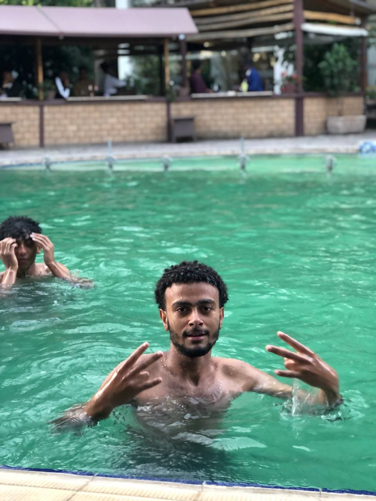

About the organization
Safe Minds Ethiopia is a local, not-for-profit civil society organization established to close the gap between Ethiopian youth and the mental health care they need.

Our story
Safe Minds Ethiopia was founded by young Ethiopians who saw peers struggle in silence with depression, trauma, and anxiety — not because they didn't want help, but because seeking it meant risking reputation, relationships, and standing in a society that still treats mental illness as weakness or shame.
Rather than wait for someone else to close that gap, the founding team built Safe Minds Ethiopia: an organization that meets young people where they already are, removes the barriers that keep them silent, and gives them a confidential, professional, and affordable path to care.
To improve mental health outcomes among Ethiopian youth through accessible, ethical, and evidence-informed psychosocial support, public awareness, and early intervention — delivered through both digital and community-based approaches.
A generation of Ethiopian youth empowered by mental wellness, free from stigma, and supported by accessible, quality care.
What guides us
We uphold the inherent worth of every person we serve, treating each individual with respect and compassion.
We dismantle financial, geographic, and social barriers to mental health care.
We protect the privacy and anonymity of every beneficiary, always.
We center youth voices in the design, delivery, and governance of everything we do.
Our programs are grounded in clinical evidence and international best practices.
We operate with full transparency, accountability, and ethical conduct.
How we work
School and university sessions on mental health literacy, screening, and Mental Health Clubs.
Anonymous access to licensed psychiatrists by voice or video, plus in-person options.
Financial support for referred medication and care, so cost is never the barrier.
Governance & accountability
Safe Minds Ethiopia is governed by a clear three-tier structure, with dedicated policies covering finance, clinical ethics, safeguarding, and data protection — so that trust, once given, is protected at every level of the organization.